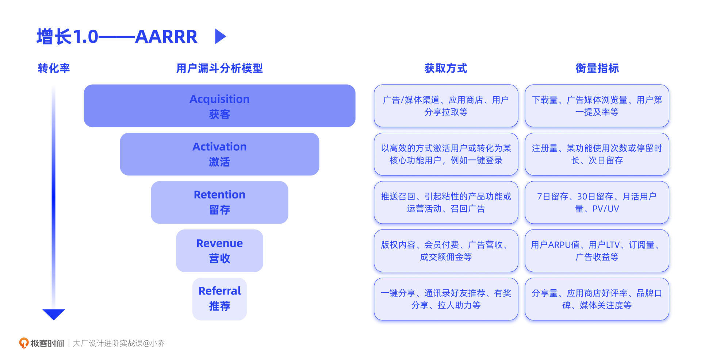
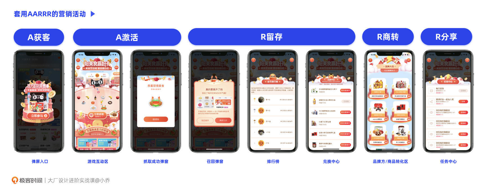
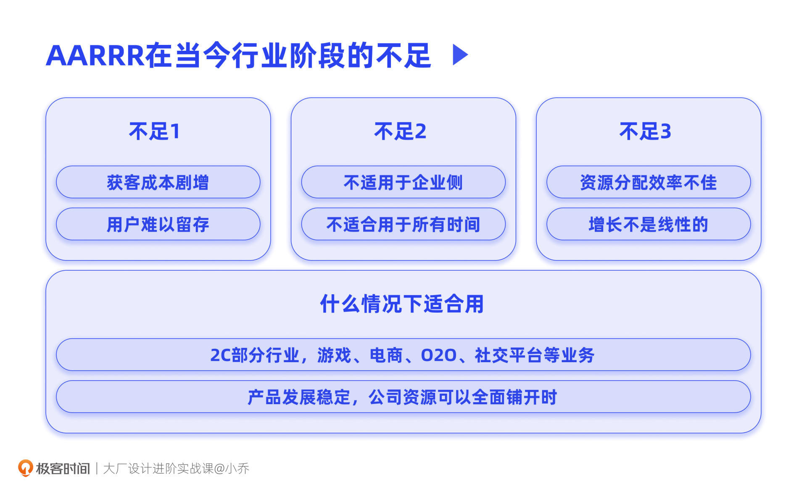
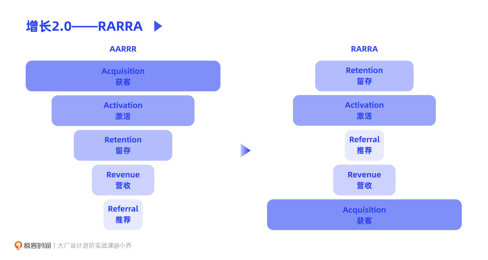
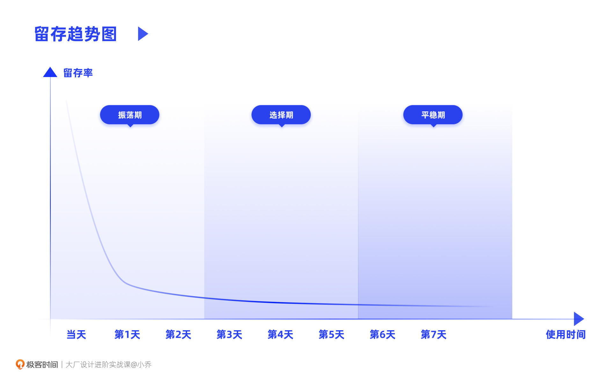
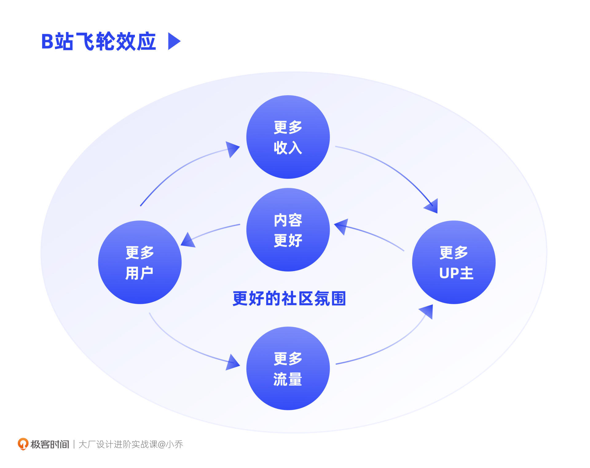
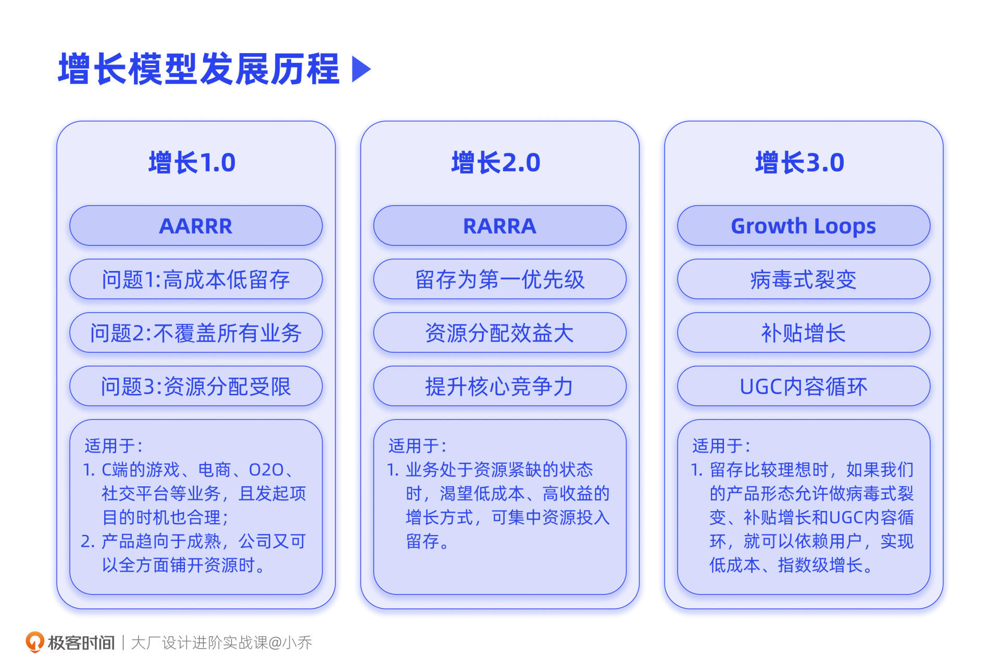

- 00 开篇词 升维思考，是设计师有效成长的第一步.md.html
- 01 业务周期：0-1-10-100-N的发展策略.md.html
- 02 商战模式：如何在商业竞争下突出重围？.md.html
- 03 市场洞察：如何找寻差异化撬动支点？.md.html
- 04 用户洞察：不懂用研的设计师不是好职场人.md.html
- 05 用户画像：是形式主义还是真的有效？.md.html
- 06 用户旅程：挖掘不同用户的核心机会点.md.html
- 07 职场晋升：看懂晋升的“游戏规则”.md.html
- 08 设计价值升级：五层进阶突破成长.md.html
- 09 基础价值 核心三原力：如何将需求转化为设计稿？.md.html
- 10 基础价值 第一性原理：从问题本质解决问题.md.html
- 11 基础价值 设计复盘：只是量化设计结果吗？.md.html
- 12 二级价值 负向网兜：如何全面发现负向问题？.md.html
- 13 二级价值 设计自驱：如何做好项目Owner？.md.html
- 14 二级价值 自驱合作：如何反内卷处理合作关系？.md.html
- 15 三级价值 增长误区：思维惯性陷阱和虚荣数据.md.html
- 16 三级价值 用户增长历程：AARRR是万能的吗？.md.html
- 17 三级价值 产品增长：如何做好产品创新？.md.html
- 18 三级价值 运营增长：如何自驱营销活动和投放？.md.html
- 19 三级价值 品牌增长 抢占心智，赢得人心红利.md.html
- 20 三级价值 增长实操：如何“步步为营”推动落地？.md.html
- 21 四级价值 L型赋能：让T型人才发挥更大价值.md.html
- 22 四级价值 “网状对比”解决共性痛点.md.html
- 23 五级价值 商业画布：设计师可以担任业务方吗？.md.html
- 24 五级价值 共创洞察：如何做好一次完善的workshop？.md.html
- 25 五级价值 领导力觉醒：写给新晋管理者.md.html
- 26 工作选择（上）：2B or 2C设计师？如何规划领域？.md.html
- 27 工作选择（下）：大厂 or 小厂？如何选择赛道？.md.html
- 28 人才地图：认知自我，成为高潜力人才.md.html
- 29 成长历程：如何从设计小白成长为团队负责人？.md.html
- 30 冰山模型：如何成为让面试官欣赏的“面霸”？.md.html
- 31 作品集指导：什么是面试官喜欢的作品集？.md.html
- 用户故事 什么是职场设计师进阶的正确姿势？.md.html
- 结束语 突破自我，成人达己.md.html
- 捐赠
16 三级价值 用户增长历程：AARRR是万能的吗？
你好，我是小乔。
我们在上节课一起探讨了三级设计价值的意义和增长常见的误区，相信你已经蠢蠢欲动，想要了解如何做好增长了。
提及增长，你一定听说过许多增长模型、增长书籍或提出过相关方法的组织，比如AARRR模型，比如《增长黑客》，比如Facebook等硅谷巨头。
我们都可以感知到，互联网行业在过去的十年发展迅猛，在激烈的商业环境竞争下，互联网产品更新迭代的速度就像是坐上了过山车，那增长的方法是否也在悄无声息地发生着变化呢？
增长的方法和重点，确实随着时代的发展，是不断更新迭代的。这节课我们将一起探讨，增长的发展演变历程和适合当今行业增长的具体方法。相信学完这节课的你，就能更好地判断，在不同项目中使用哪个增长模型会更合适。
用户增长的发展历程
说到用户增长，许多同学第一瞬间就会想到AARRR模型。
在2007年，Dave McClure提出了AARRR的业务增长模式，《增长黑客》也将其作为全书的重点章节，在国内外都广为人知。但随着行业发展，AARRR也并不完全适用于当今的互联网产品了。各大企业逐渐发现AARRR的实操问题，并更新了后续两代的增长策略。
增长1.0——AARRR
虽然AARRR并不是我们这节课的重点，但为了帮助你理解，我们先来简单了解一下。AARRR分别是五个英文单词的缩写，这五个单词的意思是：获客、激活、留存、商业营收和推荐。
根据下图，我们可以清楚地知晓，在AARRR线性漏斗中，每一个阶段的获取方式和衡量指标。

看似完整合理的AARRR模型，为什么在当今互联网行业已经不再适用了呢？原因主要有3个。
原因1，目前商业环境竞争激烈，获取用户流量的增长方式，支出成本较大，且对于许多公司或业务来说，已经没有显著帮助，更多时候只是为了满足一时的商业指标而已。
App Store和Google Play加起来，将同样的App去重，也有几百万个App。许多产品付出大量支出投放广告、引流获客，获取每一个用户的成本已经从几年前的几毛钱一个人，到现在几十元、上百元拉来一个新用户。
然而，由于各个行业的选择较多，百花齐放，吸引来的用户往往在一周内就大量流失，在一个月内可能已经流失了90%。以拉新获客为中心的增长模式已逐渐失去意义，可能吸引了许多薅羊毛的用户，最终却是竹篮打水一场空。
网络上有一些观点认为，AARRR适合已经比较成熟的产品，因为对于初创产品来说，核心功能还不完善，留存一定不好。但其实，即便是成熟产品，也不一定可以通过AARRR获得增长。如果市面上出现强有力的对手，而原本的产品没有核心竞争力的话，也很难真的让用户留下。
原因2，AARRR适用的业务类型有限，更适合消费侧，缺乏对2B产品的指导。
对于2B的产品来说，很难通过广告投放获客，想要一层层漏斗转化获得营收，更是难上加难。尤其在国内互联网行业，2B产品主要依赖商务销售关系。也许产品本身不一定比其他竞品好用，但是客户关系扎实，且针对客户的需求做了定制化功能设计，客户愿意持续付费，这对于2B产品的营收变现才是稳定可靠的。
而对2C产品来说，AARRR虽然不完全适用于当前的行业发展，但依然适用于一些特定行业和项目，比如营销游戏活动。
以我们之前讲过的频道页抓取食物的游戏为例，对于这个活动本身来说，通过入口的曝光，吸引平台流量导入，再通过游戏本身的趣味性让用户简单上手，并每天上线游戏，在游戏的过程中，进行商品和品牌店铺的交易转化，并设置分享任务引入更多用户。这其实就是AARRR。

综上所述，AARRR更适合基于移动端的游戏、电商、O2O、社交平台类业务，但并不适合企业供给侧。
原因3，公司的资源有限，AARRR的模式，强调的是资源分配在每一个环节中，且呈现为线性转化。需要满足上一层漏斗的阶段目标，才能做好下一层阶段。
但业务的实际增长环境是复杂的，需要系统性解决。真正在做增长时，针对项目的多样性和产品的不同发展阶段，资源的投入往往会有不同侧重。因此，在实操过程中，也很难完全按照漏斗的线性规律，全盘投入资源去做转化。
比如业务此时的核心阶段是营收，真的需要获客才能一步步转化为营收吗？不一定，也可以精细化运营存量用户，提供符合需求的付费点，来满足成交转化。此时，企业就可以适当收拢获客支出，转而投入到付费功能的研发。

增长2.0——RARRA
当AARRR已经不完全适用于行业发展后，Thomas Petit和Gabor Papp提出了RARRA模型。通过下图我们可以看出，漏斗顺序发生了巨大改变，不再是以获客作为增长前提，而是把留存作为第一优先级。

为什么RARRA要比AARRR更为合理呢？我们来具体分析一下两者之间的区别。
AARRR优先看的是获客流量，但通过AARRR获得的流量，也许只是短暂的留存。比如，用户也许是因为“签到打卡给奖励”等运营手段，才会每天登录。
你也许会有疑问，这样的运营活动难道没用吗？我们之后还要做运营活动吗？有用，而且用处很大，一些电商平台，就是通过几场大促活动，收获了全年80%的GMV。但往往用户的留存仅限于营销活动期间，这就像是花钱租了一批用户，在租赁期间，用户会每天来，但租赁结束后，用户依然是流失的。
但RARRA优先看的是留存，因为留存代表我们的产品真正为用户提供了价值。反过来说，用户也是真正为了这个产品而留存的。并且，公司也可以更合理地分配资源，将重点投入在提升留存上。
公司在为一个产品做UG投放之前，往往会评估这个产品的自然增长情况和留存情况。不同的产品和行业，数据标准都是不同的，但大部分C端产品在满足次留40%，7留20%，30留10%以上，才会开始投放。因为此时投放成本往往是比较理想的，投放获得的流量也能有所留存，不会竹篮打水一场空。
这里，我们还可以进一步探讨一个问题：如何提升产品的留存。
除了运营手段以外，就要通过数据分析和用户调研，找到能让用户留存的功能，做到产品为王。比如，我们讲过Airbnb开放摄影师生态，让租客全面感受到房源的真实样貌，这就是提升留存的方式。
留存有两个关键时间点：次留和7留。根据下图中的留存趋势曲线来看，次留往往是用户流失最大的时间点。用户在次日有留存，代表这个产品至少在基础功能上可以承接住TA；用户在一周后有留存，说明TA在体验过相似产品后，选择了这个产品。在这个过程中，用户经历了振荡期、选择期和平稳期。

我们想让用户留下来，就需要让用户在经历振荡期和选择期的时候，看到我们产品的核心竞争力。我们之后的课程会讲到商业模式画布，其中的核心价值主张，需要真正满足用户需求。
以电商行业为例，在2021年之前，有第一提及率的产品是淘宝。但随着抖音电商的强势杀出，市场渗透率也迅速扩大，有部分用户已转化为抖音电商用户。
电商平台主要有两个核心环节，一个是前台的流量驱动、导购分发，另一个是物流和供应链的履约驱动。而抖音电商在这两方面，都做出了差异化创新。
区别于淘宝这样的搜索电商，抖音电商在用户漫无目的杀时间的过程中，通过强大的推荐算法，让用户接触到感兴趣的商品，从而发生交易转化，因此抖音是以兴趣电商作为切入点的。
并且，用户在无意中被转化，往往是因为性价比高，抖音电商引入DTC模式降低双端（包含商家侧用户和消费侧用户）成本，配合更有导购表现力的直播和短视频功能，以差异化的方式强势入局。我曾看过一个新闻，女儿反馈母亲总被抖音上9.9元的商品转化，在一个月内花了2万元。
HubSpot负责增长的前副总裁Brian Balfour说过，“留存就是一切增长的基础。”贝恩公司的研究同样佐证了Brian的说法。
用户留存率增加5%，企业利润可以增加25%-95%。也就是说，提高用户留存率比增加付费用户数量，更能使企业得到快速成长，因为不需要负担吸引、教育和转化新客的成本。平均而言，用户续费成本比用户获取成本少7倍。
那RARRA有什么不完美的地方吗？虽然对比AARRR来说，RARRA可以根据企业发展阶段，有侧重地进行资源分配，但同样是过于单一的线性模型。增长环境是复杂的，需要配合多种手段，系统性解决。
增长3.0——Growth Loops
Brian在2018年提出Growth Loops模型，在RARRA的基础上，再一次做了优化。Growth Loops模型的核心有两个：
核心一：建立一个系统的，而不是线性断裂的模块。也就是说，增长是循环往复，相辅相成的。他将原本的线性漏斗，转换成一种循环的框架。著名的亚马逊飞轮效应，其实就是Growth Loop理念的一个案例。
我们以大家熟知的B站举例。根据下图所示，平台有了更多的用户，就会吸引更多UP主入驻，从而提供更好的内容，这又进一步吸引了更多用户；而更多用户为平台带来了更多的收入，平台就可以邀请更多优质的UP主入驻，这又进一步提供了更好的内容，从而吸引更多的用户。这样的循环往复，就让B站形成了良好的社区氛围。

核心二：让用户参与到业务的增长模式中。业务的增长不再受限于公司的资源，而是和用户共同产生价值，将存量用户的效益最大化。
常见的Growth Loops有三种，分别是病毒式裂变（Viral loop）、补贴增长（Paid loop）、UGC内容循环（User-generated content loop）。讲到这里，你一定恍然大悟，因为这些增长方式，不知不觉已经渗透在我们的日常生活中。
这些方法中，用户是业务增长的关键环节，可以为业务带来指数级增长，且成本较低。我们通过几个案例来进行讲解。
病毒式裂变：比如滴滴在扩大市场时，已有用户只要拉取新客注册，就可以和新客各得一定数额的金钱奖励，这就是病毒式裂变增长。Uber在2014年扩充中国市场时，一个城市仅需要1-2个运营，其他都由Uber的存量用户拉动增量用户，快速扩张，完成对一个城市的渗透。
补贴增长：比如支付宝在疫情期间，联同各地政府部门，在各个城市发布不同形式的消费券，以补贴的方式促进市民消费。
UGC内容循环：适用于内容平台，比如B站、小红书，都是通过用户发布的内容，形成了内容循环增长。用户会主动分享和运营私域内容，从而提升整个平台的增长。
我们该如何选择合适的增长模型？
了解了增长模型的三代发展后，你是不是在想，那我以后负责增长项目的时候，到底该套用哪个模型呢？似乎1.0模型和2.0模型都有些缺点，所以是3.0的模型最适合当今发展吗？
其实对于目前的各大企业来说，综合运用这3个模型，才是获得增长的最佳方式。只是我们在进行选择时，需要针对当前的业务发展条件，做出一些判断。
当我们的业务处于资源紧缺的状态时，必然渴望低成本、高收益的增长方式，此时可以选择RARRA，优先集中资源，做好用户留存。
当留存比较理想时，如果我们的产品形态适合做Grouth Loops，不管是病毒式裂变、补贴增长还是UGC内容循环，都要抓住机会，让用户主动地帮助我们增长，形成飞轮效应，这是成本最低又可以指数级增长的绝佳方式。
当我们的产品趋向于成熟，公司又可以全方面铺开资源时，就可以使用AARRR，充分完善和提升每一层漏斗的转化。但需要注意的是，AARRR并不适用于所有业务类型，前提是我们的产品适合AARRR，比如C端的游戏、电商、O2O、社交平台等业务。
综合回顾上面三个阶段的增长模型，我们会发现，这三个模型有个共同特点，就是都依赖于获取流量和转化流量，这其实是以商业视角在做用户增长。对于处于业务一线的业务方和算法同学来说，目前所有的数据转化模型和绩效考核指标，也都是以商业指标为准的。这其实并不是非常科学。
我们可以回顾一下行业重心的演变历程，十年前，许多企业只强调功能和商业指标，不重视体验；而近几年，各大企业都开始强调体验的重要性，讲究用户心智、品牌口碑度。比如商业数据极佳的抖音，在被社会吐槽上瘾、浪费时间、消磨民众意志后，上线了反沉迷设计，提醒用户在使用一段时间后可以休息一会。这不但没有降低抖音的DAU，还因为口碑的提升，让很多卸载了抖音的用户重新安装了抖音。
这是行业内的一个正向趋势，比起用各种手段将用户榨干来达成商业指标，做到商业与用户需求平衡，保持良好的口碑和企业形象，是更值得提倡的增长方式。
现在体验指标和商业指标在增长上还没有形成平衡模型，比如我在前面课程中给你整理过的体验指标和品牌指标，往往是一个辅助参考，最终话语权还是在商业指标上。
但我相信，在不久的将来，就会有更为合理的增长模型出现，科学地平衡商业和体验，可以根据每个产品的类型和使用情况，动态地智能化调整模型指数，使业务达到增长最高点。既可以满足商业指标让产品活下来，也可以满足用户真正的需求。这样的好处是，用户会伴随企业一起成长，从流量运营转变为“留”量运营，让企业长期健康地发展下去。
今日小结
今天，我们一起探讨了增长模型的迭代历程，了解了随着互联网行业的发展，增长的方法也在更新迭代。我们也了解到，增长并不仅仅是用户规模的增长，还有用户深度的增长，包括留存、频次、时长、商业化等方面。

在增长1.0时期，硅谷盛行的海盗模型AARRR成为最主流的增长模型，它强调获客的重要性，将流量转化为下一级漏斗，实现激活、留存、营收、推荐的增长。它的缺点在于，对于当今竞争激烈的互联网行业来说，获客成本较高，但用户留存率低；通常只适用于2C的部分场景，不能覆盖2B的增长需求；并且，由于是线性漏斗，公司在分配资源时难以达到效益最大化。
在增长2.0时期，RARRA模型强调了留存的重要性，除了获取流量的运营手段外，也需要在产品层面做出核心差异化，真正从用户需求出发，满足供需平衡，形成差异化竞争力。
在增长3.0时期，Growth Loops模型发挥出巨大作用，将之前的线性增长模型改为循环的框架，并借助用户的力量，以病毒式裂变、补贴增长和UGC内容循环的方式带来业务的指数级增长。
在清楚了每个模型的优劣势后，我们就可以根据业务的实际情况，选择恰当的模型推动增长了。
在上一节课，我们理清了增长的价值，并规避了增长误区；在这节课，我们探讨了增长模型的演变历程和使用前提。有了这些储备，我们在之后的课程中，将会重点探讨通过产品、运营和品牌的方式带来业务增长的方法，并通过实际案例了解如何推动增长项目落地。
互动时刻
回顾你过往的工作，是否曾套用AARRR的模型，推动过业务的增长呢？是否因为自己的业务无法使用增长模型而苦恼过、质疑过方法论呢？最终是如何解决的呢？
欢迎把你的经历和思考在留言区分享出来，与我和其他同学一起探讨。我们也建立了一个读者交流群，欢迎你的加入！如果你觉得有所收获，也欢迎把文章分享给你的朋友一起学习。我们下节课见。
© 2019 - 2023 Liangliang Lee. Powered by gin and hexo-theme-book.